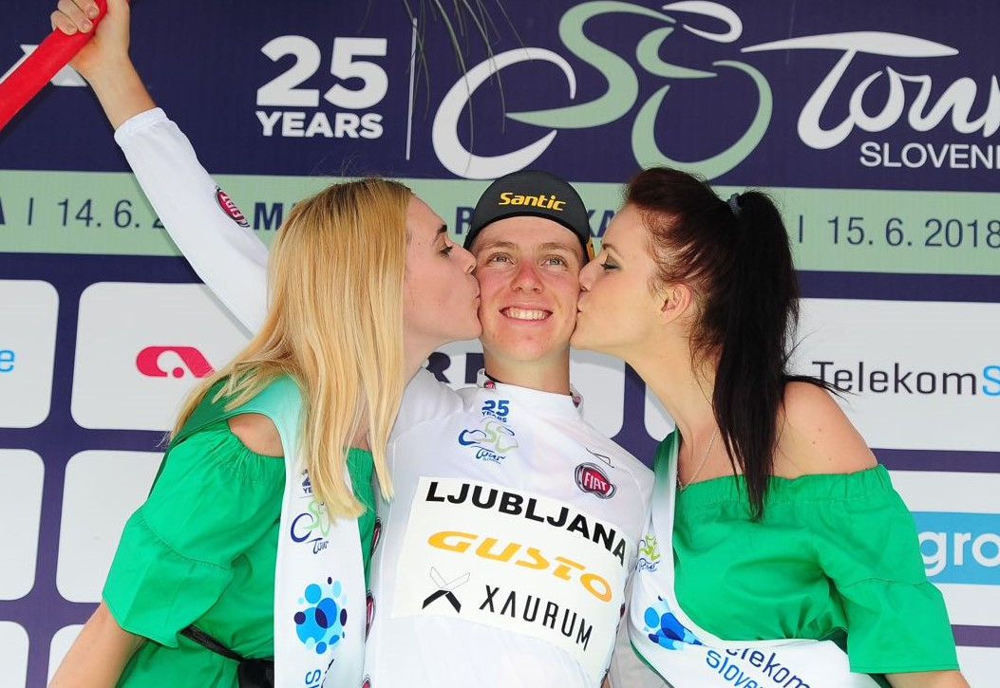
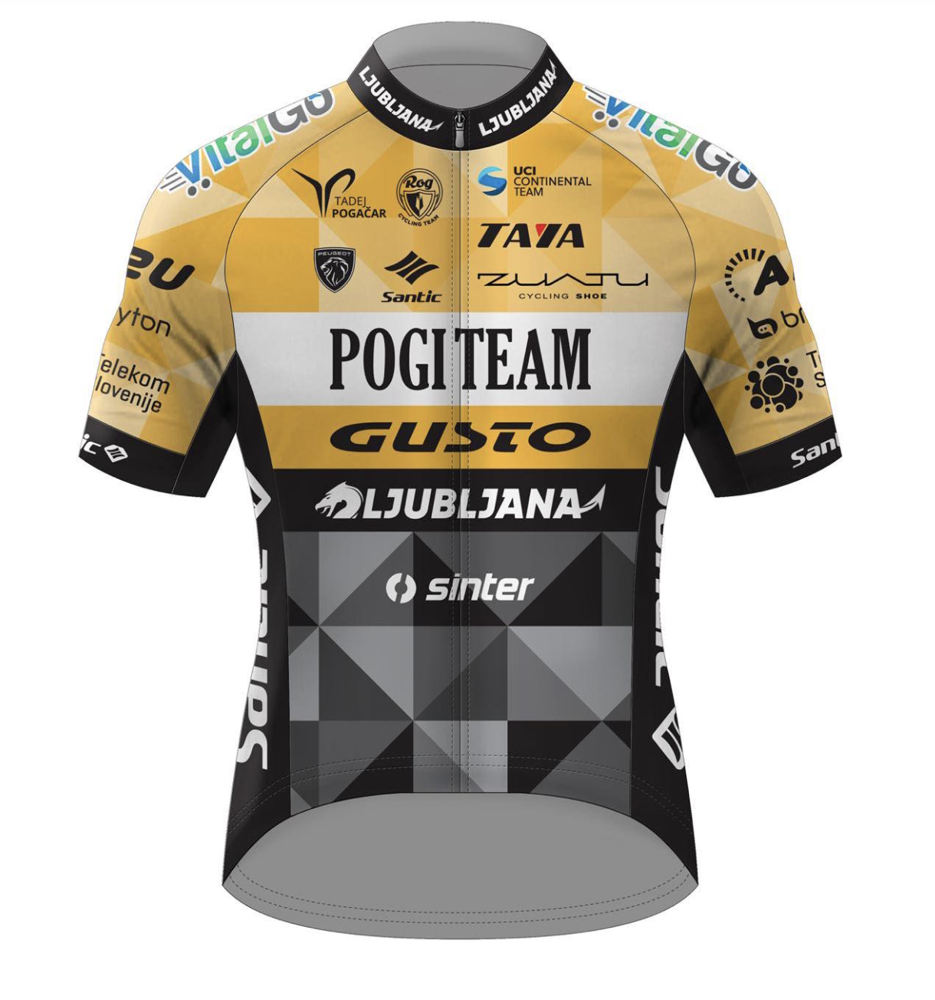
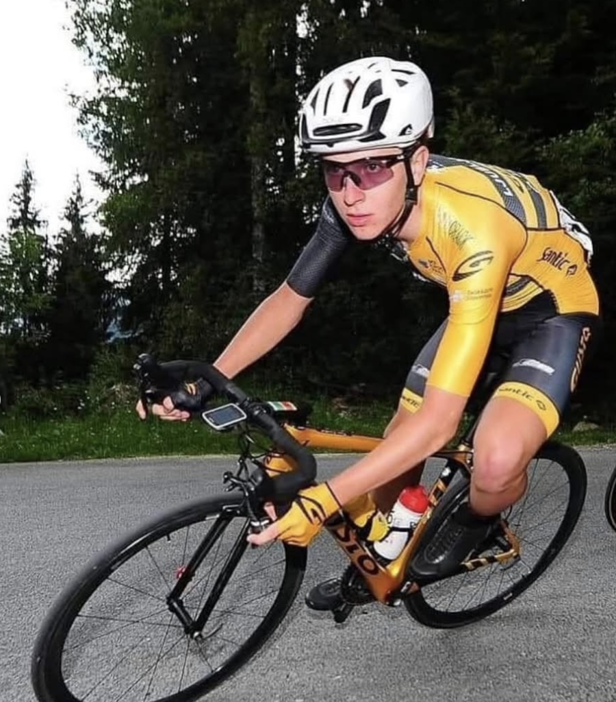

2018Ljubljana Gusto Xaurum
Tadej Pogačar
Raced with Ljubljana Gusto Xaurum in 2018, finishing fourth at the Tour of Slovenia and taking the best young rider jersey.
The Gusto story
Performance starts with engineering. Legacy starts with giving people the platform to prove what they can become.

Opportunity01 / Origin
Gusto began in Asia with an uncompromising focus on carbon engineering. But building capable bicycles was only half the ambition.
The other half was creating a path for capable riders — a bridge into European competition, where potential could meet opportunity.
02 / The proving ground
Gusto-backed teams gave emerging riders a place to race, learn and be seen. Two of those riders later became Grand Tour winners.

2018Ljubljana Gusto Xaurum
Raced with Ljubljana Gusto Xaurum in 2018, finishing fourth at the Tour of Slovenia and taking the best young rider jersey.

2016Attaque Team Gusto
Part of Attaque Team Gusto in 2016, before progressing to the sport's highest level and later winning the Giro d'Italia.
What the history means
“Legacy is not a trophy cabinet. It is the confidence to invest in potential before the result is obvious.”
That principle still guides the brand: purposeful engineering, accessible performance and respect for the rider's own road.
03 / Today
Gusto now reaches riders across markets and disciplines. The scale has changed. The intent has not: make high-performance platforms that reward commitment, curiosity and speed.
Explore the bikes ↗